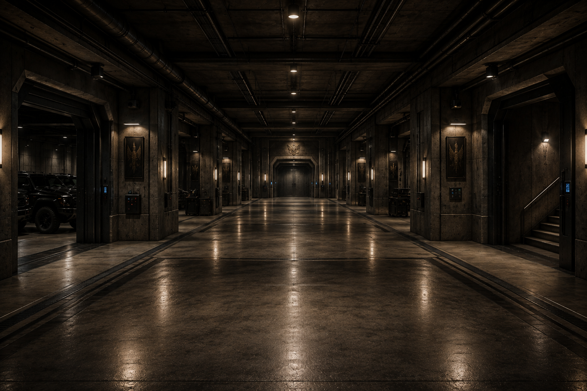
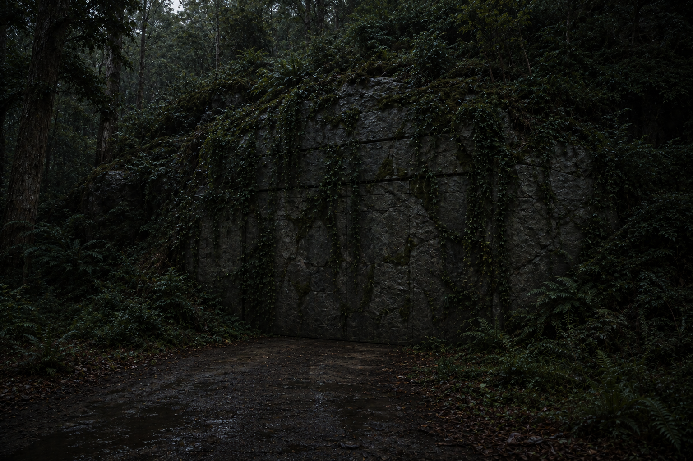
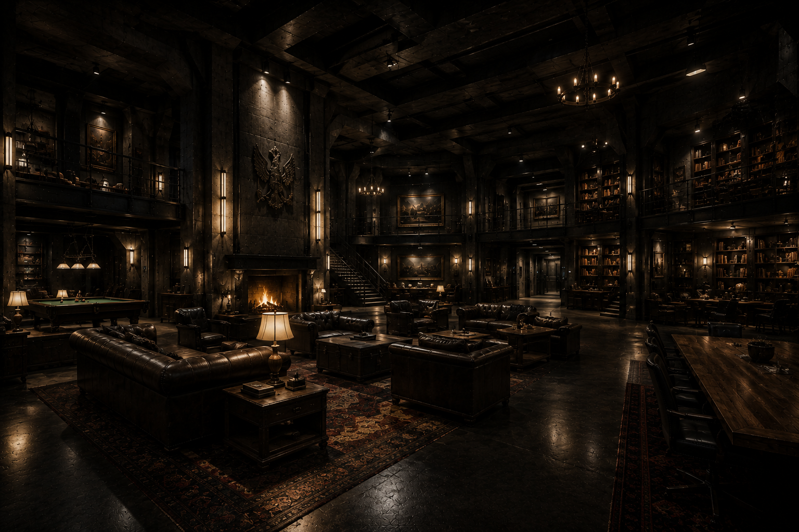
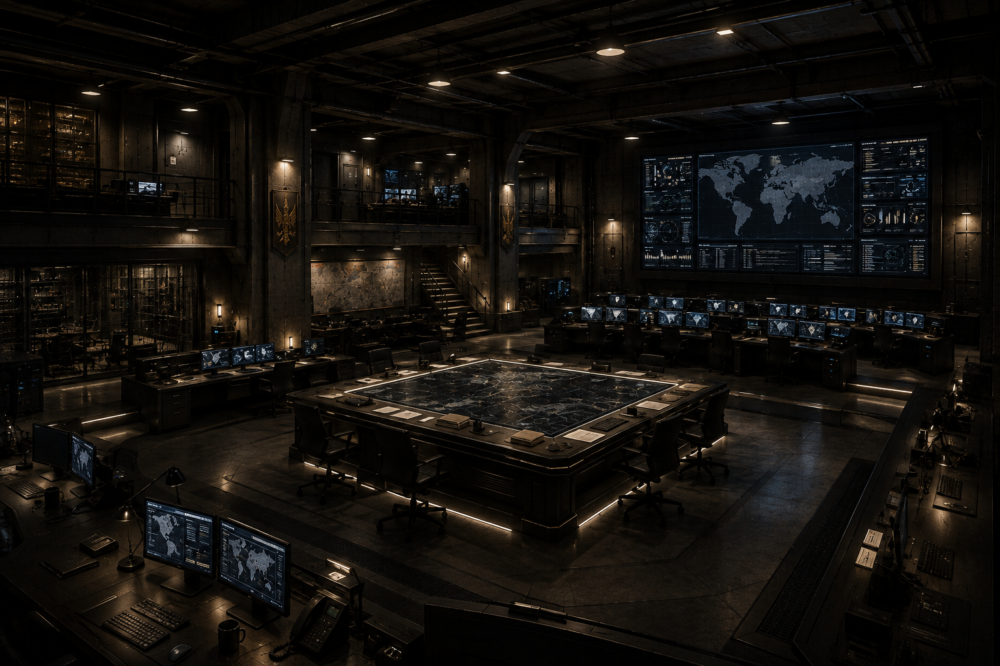
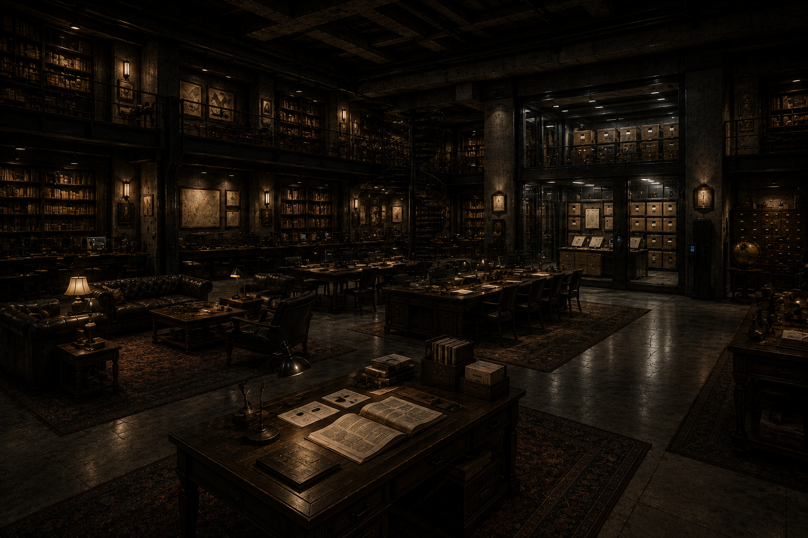
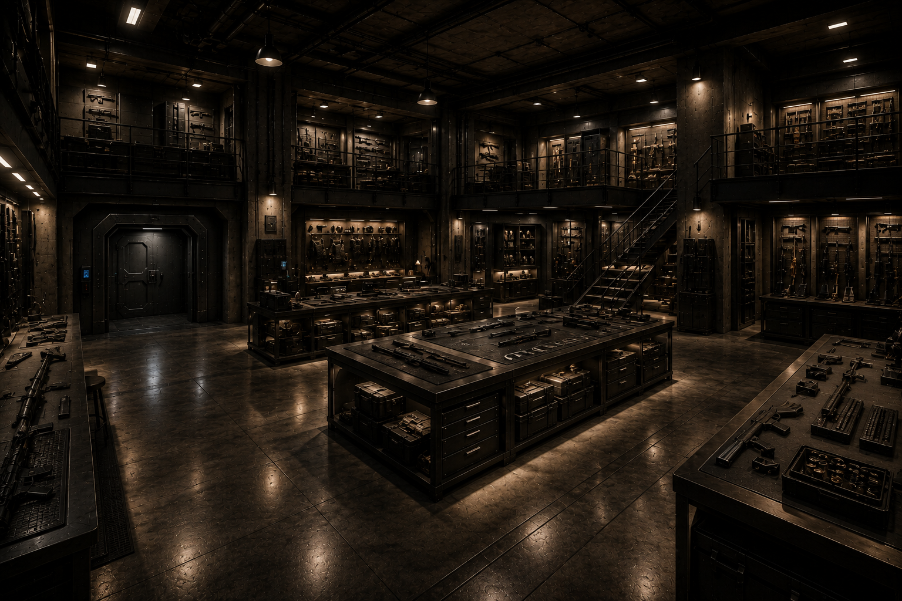

PRIVATE
PRIVATE
Comando e administraçãoContratos · Inteligência · Coordenação
01
IDENTIDADE DA ORGANIZAÇÃO
Onde a lei termina,
o contrato começa.
Fundados por Jack Connor, os Hellsings são uma unidade privada de operações especiais. Trabalham onde governos, agências e estruturas convencionais não conseguem agir sem exposição.
Contrabando, armas, tráfico humano, tecnologia ilegal e redes clandestinas formam o território onde a equipe opera. O pagamento abre a porta. O código decide se a missão será aceita.
 LOCALIZAÇÃO // CLASSIFICADA
LOCALIZAÇÃO // CLASSIFICADAACESSO // ÔMEGA
01.5 / INSTALAÇÃO SUBTERRÂNEA
Você não encontra
esta base.
Ela permite que você entre.
ARQUIVO ESTRUTURAL // B-01
O bunker
dos Hellsings.
Oculto sob quilômetros de pedra e vegetação, o centro de operações concentra comando, inteligência, veículos, armamentos e rotas de evacuação. Por fora, silêncio. Por dentro, uma organização inteira em movimento.
- NÍVEIS
- CLASSIFICADO
- ENERGIA
- AUTÔNOMA
- ACESSOS
- BIOMÉTRICOS

SETOR 02Corredor centralDistribuição subterrânea
Garagem principalMobilização operacional
Passagem de emergênciaAcesso restrito ao comando

SETOR 05Garagem secretaExtração · Contingência · Silêncio
MAPA INTERNO // SETORES 06—12
Além das portas
de contenção.

06Salão principalNúcleo de circulação

07Setor de operaçõesComando · Vigilância · Missões

08BibliotecaArquivos · Pesquisa · Inteligência

09ArsenalEquipamento sob autorização
EnfermariaTriagem · Cirurgia · Recuperação
AlojamentosÁrea privada dos agentes
Cozinha e dispensaAutonomia de longa permanência
REDE PRIVADA // VISÃO OPERACIONAL
Sistema
Hellsings.
HLS NETWORK TIME00:00:00CANAL CRIPTOGRAFADO · NÍVEL ÔMEGA
Nenhuma missão aceita permanece sem resolução.
ARQUIVO // OPERAÇÕES ENCERRADAS
Registros de
missões.
SELECIONE UM REGISTROARQUIVO PARCIALMENTE DESCLASSIFICADO
Registros narrativos provisórios; poderão ser substituídos quando a história oficial for definida.
HLS COMMS // CANAL INTERNO
Fórum
seguro.
06 AGENTES CONECTADOS
CANAL EXTERNO // NOVA SOLICITAÇÃO
Acione os
Hellsings.
Descreva o problema. Alice analisará se o contrato respeita o código da
organização.
- Nenhum inocente será usado como moeda.
- Nenhum agente poderá ser comprado.
- Solicitação não significa missão aceita.
HELLSINGS // PRÉ-CONTRATO
HLS-000000
- SOLICITANTE
- OPERAÇÃO
- RISCO
- REGIÃO
- STATUS
- AGUARDANDO ANÁLISE
02 / FORMAÇÃO OFICIAL
Dez identidades.
Uma unidade.
10 DOSSIÊS ATIVOS
Os retratos permanecem classificados. Cada agente é representado por assinatura cromática e leitura biométrica provisória.
ADM
00
00
DIRETRIZ ESPECIAL / ALICE MYERS
A operação começa
antes do campo.
STATUS: NÃO OPERACIONAL EM CAMPO
Alice não acompanha mais as missões. Ela administra os Hellsings, analisa clientes, negocia contratos, controla recursos e protege a organização antes que qualquer agente atravesse a porta.
- Contratos e clientes
- Administração financeira
- Coordenação médica
- Autorização operacional
03 / ESCOPO DE ATUAÇÃO
O território
sem bandeira.
MISSÕES SOB CONTRATO
Cada ação passa pelo comando, pela administração e pelo código interno.
Contrabando
Interrupção de rotas de drogas, armas, pessoas e tecnologia ilegal.
Rastreamento
Localização de alvos, cargas, redes e conexões desaparecidas.
Infiltração
Entrada silenciosa, inteligência humana e extração sem exposição.
Intervenção
Resposta tática quando forças regulares não podem ser associadas à missão.
04 / CÓDIGO INTERNO
O contrato paga.
O código governa.
As regras abaixo sustentam a organização acima de qualquer cliente ou agente.
-
01
Nenhuma vida inocente é moeda.
Uma missão é recusada quando o objetivo exige vítimas que não escolheram o conflito.
-
02
Nenhum agente está à venda.
O cliente contrata a organização. Lealdades individuais não fazem parte do contrato.
-
03
Missão aceita é missão concluída.
O compromisso termina apenas quando o objetivo é cumprido ou o comando encerra a operação.
-
04
A família permanece fora.
Os Hellsings nunca são usados como instrumento de disputas pessoais ou familiares.